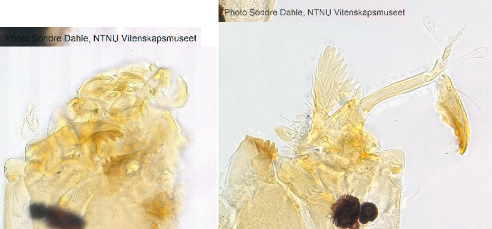

Neostempellina thienemanni (Reiss, 1984)

Antennes
Grand socle avec une épine distale prononcé et « une extension palmée ».
Mandibules
Dent dorsale pâle ; apicale. 2 dents internes brunâtres.
Mentum
Dent médiane pâle et arrondie. 6 paires de dents latérales. 1ère paire des dents latérales plus ou moins fusionnée avec la dent médiane. Plaques ventromentales séparées médialement par la largeur de 3-4 dents mentales.
Labre
SI en forme de peigne. SII plumeuses, situées sur un grand piédestal. Peigne de l’épipharynx composé de 3 plaques fines et pointues distallement.
Prémandibules
Prémandibules avec 2 dents.
Ecologie
Genre peu connu. Les larves construisent des fourreaux transportables.
Espèces recensées en France
1 : Neostempellina thienemanni